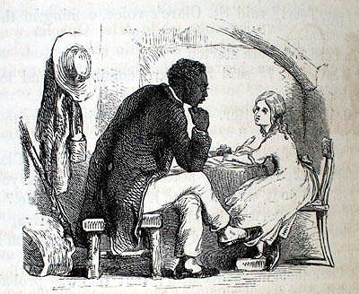

Directions: Fill in the chart as we study what each form of the antislavery argument asks of its reader. Keep this page in your notebook. You will use it again on the review day before the unit test.

| Form | Its leading example in this lesson | What it asks of the reader, and its evidence |
|---|---|---|
| The novel | ||
| The oration | ||
| The reported speech | ||
| The narrative | ||
| The rescue |
Two texts, one speech. Pick the reported speech row and write a short paragraph on it. State which of the two Akron texts you would quote in a paper, and defend the choice from who wrote each text down and when.
| Form | Its leading example in this lesson | What it asks of the reader, and its evidence |
|---|---|---|
| The novel | Stowe's Uncle Tom's Cabin, serialized in 1851 and a book in March 1852, selling by the usual estimates near three hundred thousand copies in its first year. | It asks the reader to feel. Its evidence is the slave narratives' record, families parted at the auction block, and households corrupted on both sides of enslavement, defended as fact in Stowe's Key of 1853. |
| The oration | Douglass at Rochester on July 5, 1852, invited to celebrate the Fourth and answering that the day was his audience's, not the slave's. | It asks the reader to judge. Its evidence is the founding's own promises audited against the slave's present, delivered with scorching irony because the audience already knew the facts. |
| The reported speech | Truth at Akron in May 1851, surviving in Robinson's Anti-Slavery Bugle report of June 21, 1851 and in Gage's version of 1863. | It asks the reader to grant women's rights on the evidence of a life of labor, and it teaches source care: the later text added the famous refrain and a dialect its speaker did not use. |
| The narrative | Jacobs's Incidents in the Life of a Slave Girl, 1861, published as Linda Brent after seven years hidden above her grandmother's storeroom. | It asks the reader to witness. Its evidence is a life in the first person, a child learning at six that she was a piece of merchandise and a father whose earnings could not buy his children. |
| The rescue | The Syracuse crowd freeing William Henry in October 1851, the Christiana defense that September, and the Boston crowds at Anthony Burns's rendition in 1854. | It asks the reader to act. Its ground was the higher law doctrine, and its evidence was public: rendition had become a spectacle the republic staged against itself. |
Two texts, one speech. Strong answers quote Robinson's 1851 report, because Marius Robinson, the convention's secretary, printed it in the Anti-Slavery Bugle on June 21, 1851, weeks after the speech. Gage's version, published in 1863 by a woman who had presided at Akron, is evidence of how the speech was remembered, and it added the refrain and a southern dialect that Truth's New York birth and Dutch childhood contradict.